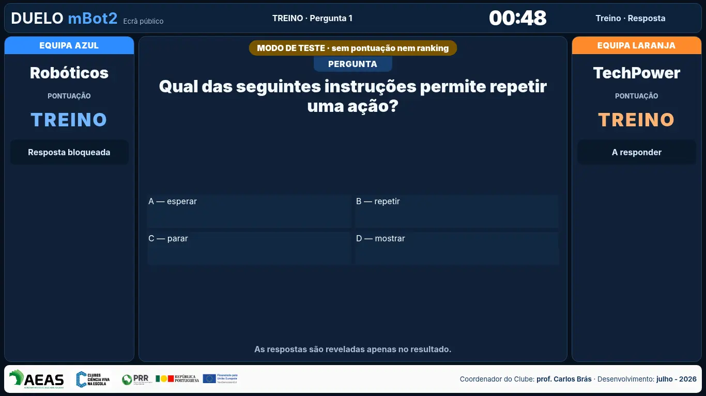

Robótica · competição educativa01Acesso mediante contacto
Duelo mBot2
Duas equipas respondem a questões e conduzem ou programam os seus mBot2 para alcançar a zona colorida escolhida. Conhecimento, estratégia, rapidez e precisão contam para a pontuação.
- modos Programação, Live e Misto;
- dois robôs, pista física e ecrã público;
- questões de diferentes disciplinas e níveis.